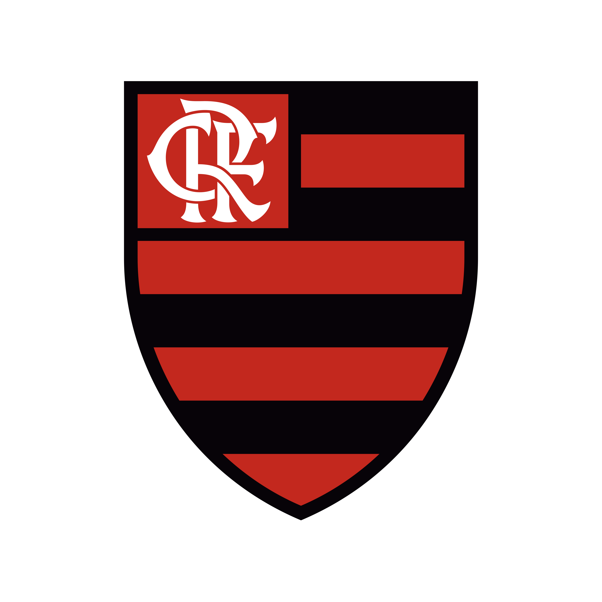

Principais times brasileiros
Bem-vindo à página dedicada aos três principais times brasileiros: Fluminense, Flamengo e Palmeiras.
Neste espaço, mergulharemos nas ricas histórias, conquistas e tradições que moldaram esses clubes ao longo dos anos, tornando-os verdadeiros ícones do futebol nacional.
Caso queira ir direto para algum time, clique no nome de cada um acima, e será direcionado para sua parte.
Prepare-se para explorar cada detalhe desses clubes lendários, desde os seus momentos mais gloriosos até os desafios enfrentados ao longo do caminho. Aqui, celebramos a paixão pelo futebol e a herança única que cada um desses times carrega consigo.
Então, junte-se a nós nessa jornada emocionante pelo universo do Palmeiras, Fluminense e Flamengo.
- Fluminense Football Club
-
Fundado em 21 de julho de 1902, por Oscar Cox, jovem filho de um cidadão inglês vice-cônsul da Inglaterra no Equador,
o Fluminense Football Club levava, à época, as cores cinza e branco. Cox é um dos grandes responsáveis pela chegada
do futebol ao Brasil.

-
Em diversas idas à “Terra da Rainha”, sempre trazia novidades, bolas, materiais esportivos. Também jogou,
foi campeão Carioca de 1906, quando o Flu já era verde, branco e grená. Com problemas para adquirir o tecido
cinza para o uniforme original, em 1904 foi aprovada a alteração, nascendo o Tricolor.
-
É uma instituição que respira tradição e elegância. O "Time de Guerreiros" tem uma história
repleta de momentos memoráveis, com conquistas que ecoam através das décadas, alimentando a devoção de uma apaixonada torcida.
Considerada o Prêmio Nobel do Esporte, o Fluminense é o único clube da América Latina que detém a Taça Olímpica, em 1949,
além de ser o único clube de futebol do mundo ter seu nome inscrito na honraria concedida pelo Comitê Olímpico Internacional
por serviços prestados ao esporte.
Tetracampeão brasileiro, campeão da Copa do Brasil e da Copa da Primeira Liga, e 33 vezes campeão Estadual. Vice-Campeão das
Copas Libertadores da América e Sul-americana.
Além da sede de Laranjeiras e do Maracanã, onde manda seus jogos, o Fluminense possui dois Centros de Treinamentos. O de Xerém,
em Duque de Caxias, é voltado para as divisões de base, e o da Barra da Tijuca, do Futebol Profissional.
Para mais informações, acesse o site oficial aqui
- Clube de Regatas do Flamengo
-
O Flamengo foi fundado em 17 de novembro de 1895 para as disputas de remo. A entrada da equipe no futebol aconteceu em 1912.
Atualmente, o time rubro-negro é o maior vencedor da história do Campeonato Carioca, com 31 títulos. Segundo diversas pesquisas,
é o clube com o maior número de torcedores do País.
O clube acumula uma lista impressionante de conquistas, incluindo 8 títulos do Campeonato Brasileiro, 3 Copas do Brasil, 2 Copas
Libertadores da América e 1 título da Copa Intercontinental.
Tem como suas cores tradicionais o vermelho e o preto e como seus maiores rivais esportivos o Vasco da Gama, o Fluminense e o Botafogo.
O Flamengo é o clube de futebol mais popular do Brasil,[31][32] com uma torcida estimada em 40,4 milhões[33] de torcedores espalhados
por todas as regiões do Brasil. Segundo levantamento conduzido pela agência de marketing desportivo Gerardo Molina-Euroamerica,
o Flamengo é, em números absolutos, o clube de futebol com o maior número de seguidores em todo o mundo

Para mais informações, acesse o site oficial aqui
- Sociedade Esportiva Palmeiras
-
O Palmeiras é um time paulista criado por membros da comunidade italiana no começo do século XX, no bairro do Brás,
na cidade de São Paulo.
-
É um dos poucos times com dois mascotes, que são o periquito e o porco. O estádio do Palmeiras é o
Allianz Parque, situado na zona central da cidade de São Paulo.
- O Palmeiras, conhecido carinhosamente como o "Verdão", carrega consigo uma trajetória repleta de glórias e paixões.
Desde sua fundação em 1914, o clube acumulou inúmeros títulos regionais, nacionais e internacionais, deixando uma marca
indelével no cenário esportivo brasileiro. Ao longo dos anos, o Palmeiras conquistou numerosos títulos, incluindo 10 títulos
do Campeonato Brasileiro, 4 Copas do Brasil, 1 Copa Libertadores da América e 2 títulos da Copa Intercontinental.

Para mais informações, acesse o site oficial aqui